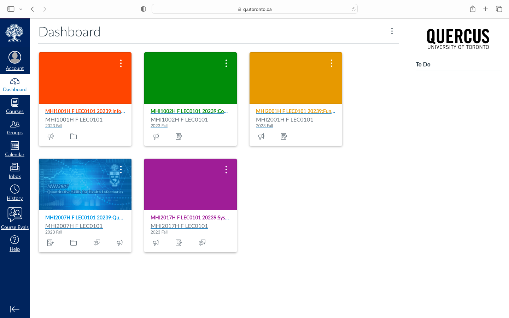

Access your classes online by using your UofT QUERCUS account.
As described on the University of Toronto School of Continuing Studies webpage, "Quercus is a learning management engine, and is the University of Toronto’s main online teaching and learning platform".
Login to QUERCUS using your UTORid/JOINid and password.
Once you've logged in to QUERCUS, your dashboard should look similar to the one below:
